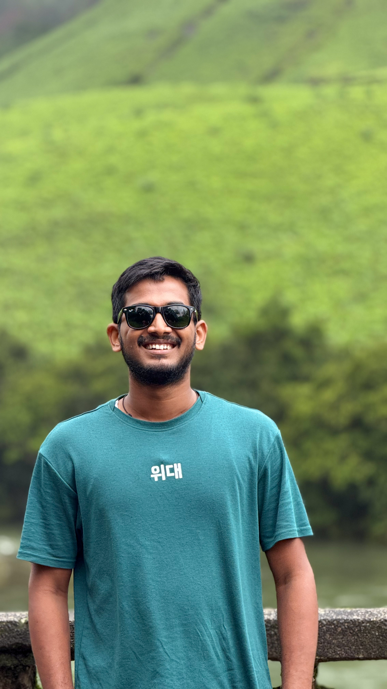

Computer Science Engineer &
Executive Tech Leader.
3rd-year B.E. Computer Science & Engineering undergraduate (2024–2028) at NMAM Institute of Technology (NMAMIT), NITTE. Serving as Vice President (2026) and Digital Media Head at TUDAR Club, and FOP Team Lead. Proven track record leading major campus initiatives with technical foundations in C++, Python, Web Development, and Systems.

Academic Foundation & Leadership Bio
Academic Overview
I am Ayush Rai, a Computer Science & Engineering undergraduate at NMAM Institute of Technology (NMAMIT), NITTE, passionate about software engineering, web technology, and student leadership.
Currently in my 3rd year of B.E. Computer Science & Engineering (2024–2028), I actively serve as Vice President (2026 tenure) and Digital Head, Media Head & SMC Head at TUDAR Club, and Team Lead for the Freshers Orientation Program (FOP).
B.E. in Computer Science & Engineering (2024 – 2028)
Executive leadership, cultural initiatives, campus outreach, and institutional representation
Spearheading digital media strategy, team direction, and social media operations
Leading team operations and onboarding for incoming engineering freshmen
Technical & Leadership Focus
Combining rigorous computer science coursework with high-impact executive responsibilities.
C++, Python, Data Structures & Algorithms
Frontend Engineering, Responsive UI, Git Workflow
Practical Cyber Security, Vulnerability Analysis
Vice President (2026), Strategic Operations & SMC
Leadership & Campus Experience
Team Lead & Event Volunteer
Freshers Orientation Program (FOP) — NMAMIT, NITTE
Served as Team Lead and Volunteer for the annual Freshers Orientation Program (FOP) at NMAMIT. Guided incoming engineering freshmen through campus integration, managed team volunteer logistics, organized orientation activities, and led group onboarding sessions.
Vice President
TUDAR Club — NMAM Institute of Technology, NITTE
Serving as Vice President at TUDAR Club, overseeing organizational administration, cultural initiatives, campus outreach, student engagement, and steering institutional brand representation and team operations.
Digital Head, Media Head & SMC Head
TUDAR Club — NMAM Institute of Technology, NITTE
Promoted from Digital Co-Head to Digital Head, Media Head & Social Media Committee (SMC) Head at TUDAR Club. Spearheading digital media strategy, managing technical and media teams, coordinating official campaigns, and directing content releases for major institutional events.
Cyber Security Intern — Fundamentals of Cyber Security
Practical Security Internship & Tools Mastery
Completed a practical internship in Fundamentals of Cyber Security. Gained hands-on experience mastering essential security tools, network defense fundamentals, vulnerability analysis, security auditing concepts, and threat mitigation.
Computer Science & Engineering Skills
Programming & Core CS
Web Technologies
Tools & Leadership
Let's Connect for Opportunities
Looking to recruit a dedicated Computer Science student with proven team leadership, web engineering skills, and academic drive? Send a direct message below.